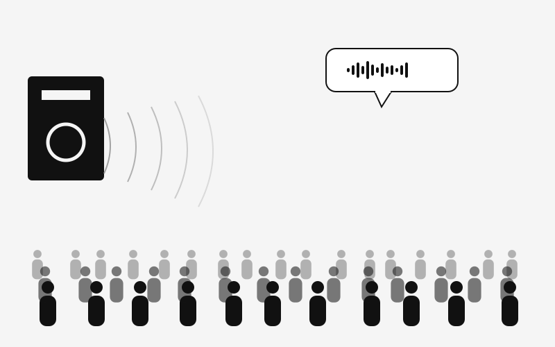
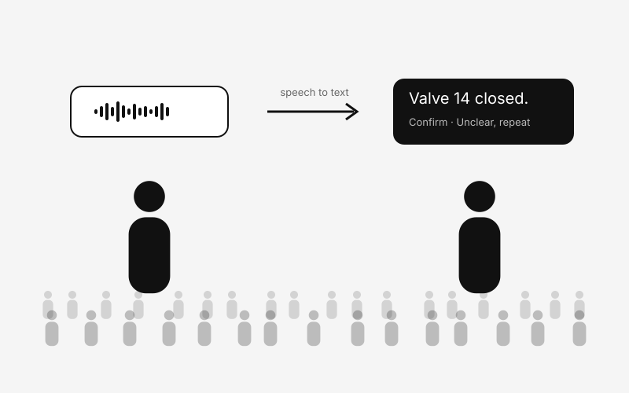
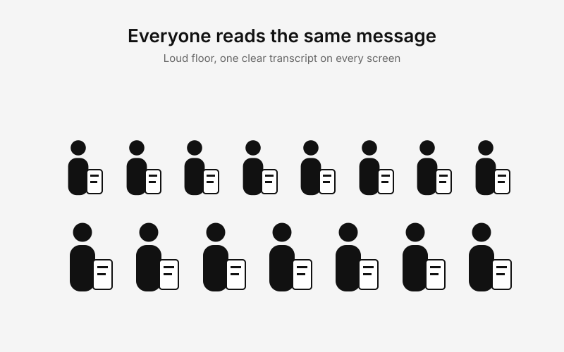

INTERCOM
Turns each person's Communicate through Machinery, Crowds and Construction Noise Seamlessly
Already have a Code? Join a Room
Every message is shown as text first, so a number or machine ID can be read instead of guessed.
The other person can also play the message as synthesized speech. It never plays by itself unless they turn that on.
Two people join one room by code or link and reply the same way, from separate devices.
Your recording goes to this app's server, which sends it to Gnani Prisma for speech-to-text. The transcript goes to the other person. If spoken playback is on, the server sends the text to Gnani Timbre for text-to-speech. The API key stays on the server.
Transcription can be wrong. Confirm important instructions, and do not rely on this app for safety-critical control.
Recordings are sent to Gnani for processing and are not stored by this app. Generated speech is held in server memory for 30 minutes. Rooms and messages are held in memory and removed after two idle hours or when the server restarts. The microphone is only on while you are recording. Browser noise suppression is best effort, and this is not a certified safety system.
Illustrations of the situations Intercom is built for.



People working in factories, construction sites, warehouses, and other loud places often cannot understand each other on a normal voice call.
Shouting and repeating instructions is slow, and lip-reading is unreliable. Numbers, machine identifiers, locations, and instructions are the easiest things to mishear, and the costliest.
It gives both people a reliable written channel. What one person says becomes text on the other person's screen, with optional spoken playback, so important details can be read and confirmed.
Illustrations of the situations Intercom is built for. Drop your own photos into public/gallery/ with the same file names to replace them.
Values come from real requests since the server started. Nothing here is simulated.